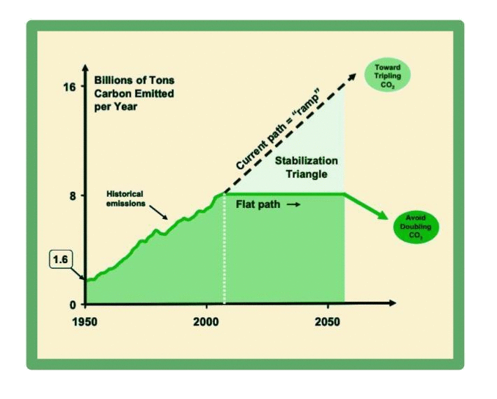

Stabilization Wedges Game
Carbon emissions from fossil fuel burning are projected to double in the next 50 years. If we keep on the current path, 50 years from now we'll be emitting 16 billion tons of carbon into the atmosphere every year. To get on track to avoiding dramtic climate change, we must keep our carbon emissions at the level they are at right now. That's called the Stabilization Triangle, shown below.
Ways to stop these high levels of carbon emissions already exist and are ready to be put into action. It can be complicated: we need to make sure we're not spending too much money or putting too many restrictions on one industry. But it can be done.
Click "Play the Game" to learn about 15 existing strategies to reduce carbon emissions and to create your own strategy to flatten the Stabilization Triangle.
Play the Game!